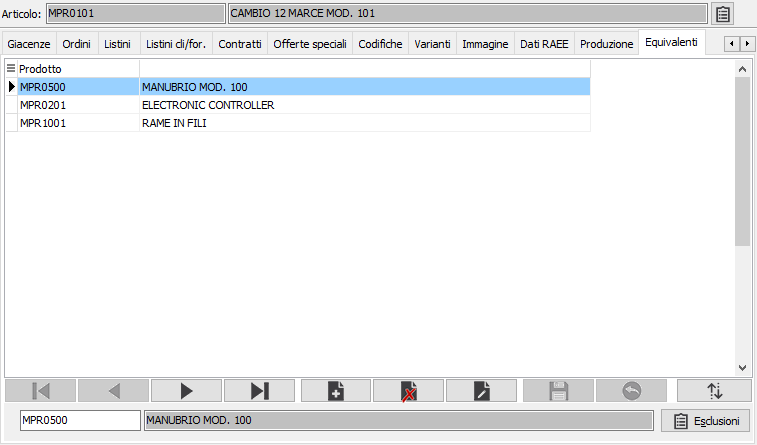
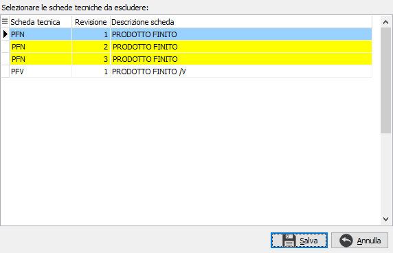

Equivalenti
La sezione è visibile solo se a livello di configurazione base è stata attivata la gestione degli articoli equivalenti. Da questa finestra è possibile associare i prodotti equivalenti definendo anche l’ordine di presentazione tramite il pulsante Ordine; gli articoli abbinati devono avere gli stessi parametri di gestione del dettaglio quantità (variante, ubicazione, lotto) del prodotto a cui vengono abbinati. In caso di presenza prodotti equivalenti nella finestra “Analisi giacenze prodotto” dei documenti (richiamabile tramite la pressione del tasto F12 sul campo Prodotto) è presente una ulteriore pagina con l’elenco dei prodotti equivalenti e le relative giacenze.


Se è attivo il modulo “Produzione MRP I” è presente il pulsante Esclusioni con cui è possibile limitare l’utilizzo del componente alternativo escludendo le schede tecniche in cui l’articolo è presente come componente. Compare la finestra a lato che riporta le schede tecniche dove il prodotto principale è componente ed è possibile con il doppio clic del mouse selezionare quelle per cui non si vuole utilizzare l'articolo equivalente su cui si è posizionati.